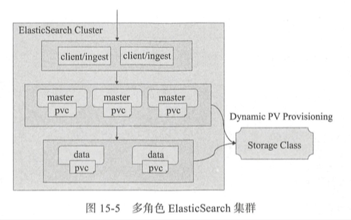
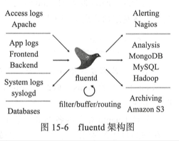

| Title | Date | Modified | Category |
|---|---|---|---|
| ELK | 2019-06-11 12:00 | 2019-06-11 12:00 | micros |
1. EFK
一种流行的开源解决方案是将fluentd作为节点级代理程序进行日志采集，并将之聚合存储于Elasticsearch进行日志分析，以及通过Kibana进行数据可视化。这种组合通常简称EFK。
1.1. Elasticsearch

1.2. 日志采集代理fluentd
fluentd是一个开源的数据收集器，基于C和Ruby语言开发，它目前有数百种以Ruby Gem形式独立存在的可选插件，用于连接多种数据源和数据输出组件等，如fluent-plugin-elasticsearch插件用于实现将采集到的数据发送给Elasticsearch。

1.3. Kibana
Kibana是Elasticsearch的数据分析及可视化平台，能够用来搜索，查看存储在Elasticsearch索引中的数据。